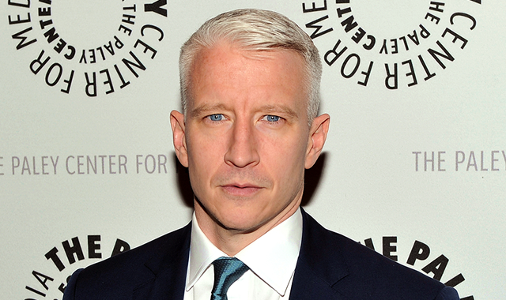

The Rainbow Comes and Goes is "a touching and intimate correspondence between Anderson Cooper and his mother, Gloria Vanderbilt, offering timeless wisdom and a revealing glimpse into their lives". I'm personally enjoying the book because it's honest and they are both very open with each other. They touch upon tough subjects like the suicide of Anderson's brother and the death of his father and his mother's sickness.
Other photos of Anderson Cooper
- 
Go follow his instagram!